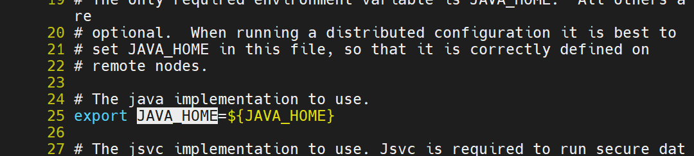
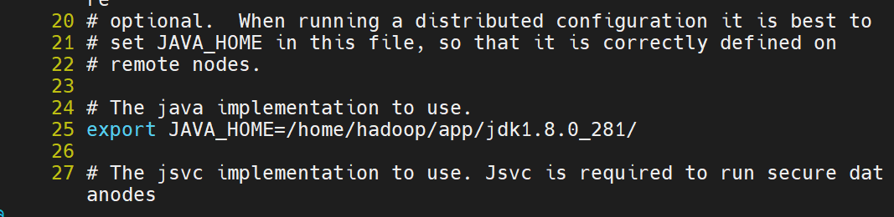
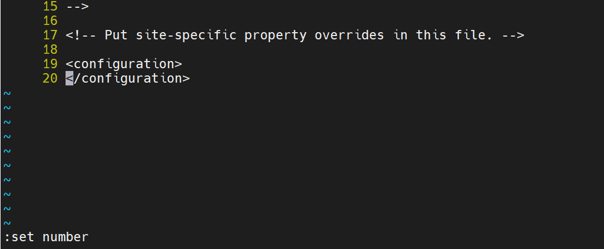
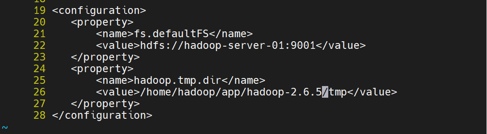
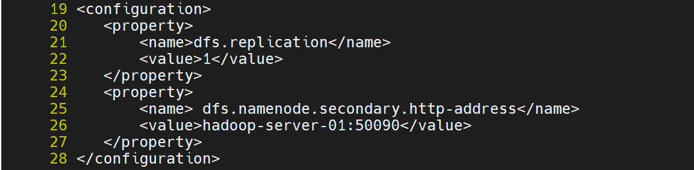
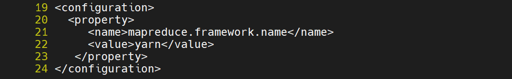
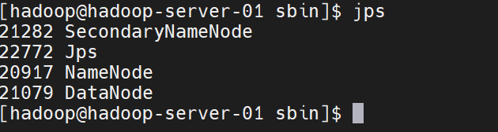

hadoop开发环境搭建(2)
1、hadoop软件安装
安装JDK，Hadoop
步骤略
2、搭建hadoop伪分布式环境
1、修改Hadoop的配置文件
1、进入hadoop安装目录
cd $HADOOP_HOME/etc/hadoop，$HADOOP_HOME代指你安装的hadoop的目录
2、修改 hadoop-env.sh
修改第25行处的JAVA_HOME地址为你当前用户的所安装的jdk绝对路径，如
修改前

修改后

3、修改 core-site.xml
在文件中添加下列内容
1 | <configuration> |
修改前

修改后

4、修改 hdfs-site.xml
在19行添加如下内容
1 | <property> |

5、修改 mapred-site.xml
目录下并没有mapred-site.xml文件，但是有一个mapred-site.xml.template文件，我们重命名它为mapred-site.xml即可
在19行后面添加如下内容
1 | <property> |

6、修改yarn-site.xml文件
在15行后面添加如下内容
1 | <property> |
7、修改从节点
vi slaves
默认为localhost，修改为要成为从节点的主机名或者ip即可
2、启动Hadoop
1、格式化namenode
cd $HADOOP_HOME/bin
./hadoop namenode -format
2、启动各项服务进程
cd $HADOOP_HOME/sbin
./start-dfs.sh
如果没有配ssh免密钥，会要求输入密码
启动完成后
jps

出现如图所示的进程，说明服务启动成功，
-------------本文结束感谢您的阅读-------------